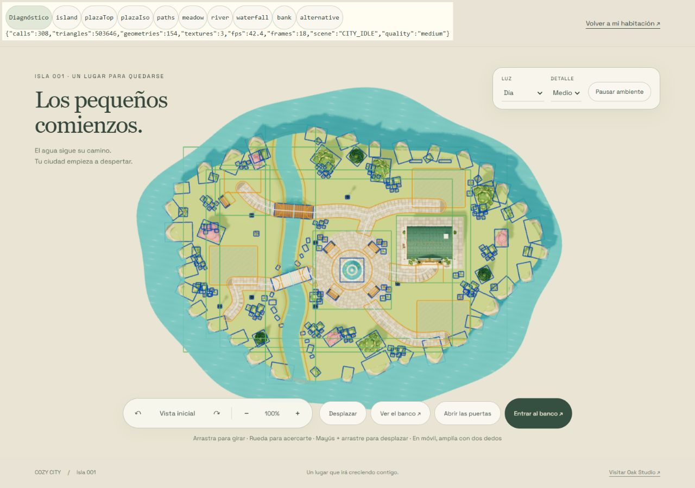

COZY CITY · 2 NOV 2026
Una isla con espacio para vivir.
225 colocaciones, un río continuo, dos puentes conectados y una pradera abierta. Comparativas tomadas en el navegador con las mismas nueve cámaras a 1280 × 900.
Antigua terraza y nueva pradera
Diagnóstico espacial · solo desarrollo
Huellas orientadas, reservas, zonas, caminos y cauce. No hay incidencias finales.
